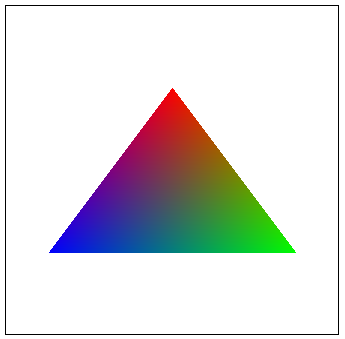

Give a high-level overview of what you implemented in this homework Think about what you've built as a whole. Share your thoughts on what interesting things you've learned from completing the homework.
In order to rasterize the triangles, we iterate through the picture starting from the lowest X triangle point
(rounded down) to the highest X point (rounded up) and from the lowest Y
triangle point (rounded down) to the highest Y point (rounded up). For each point, we add .5 to both the X and Y
to get the center of the pixel and check if it passes the three point line test. If it does, then we fill in the
pixel with the given color, else we
leave it colorless.
Our algorithm only checks for samples within the triangle bounding box since it is bounded by the
smallest and largest X, Y coordinates instead of iterating through every sample.
|
triangle is not completely connected with the rest. |
In Part 1 we implemented a simple rasterizer, which puts one sample at the centre of each pixel. However, this
leads to aliasing, and in Part 2 we use a simple super sampling technique to reduce the aliasing.
Super sampling can be viewed as a "filtering" and then sampling. For example, if we double the sampling rate,
the
sample distance is halved, and if we average them, it is just like we apply a low-pass box filter to filter out
the high frequencies. So the high frequencies relevant to the sampling rate now is removed, which enables us to
keep more high frequency information in the original signal.
Suppose the current super sampling level is n^2(in the code this is sample_rate), we divide each pixel
into n^2 subpixels, and put a sample at the centre of each subpixel, this will require us to use a buffer of size
n^2 times the number of pixels to store the value of every subpixel. In the final pass, we average the color of all the subpixels in
each pixel to get the final color of the pixel.
However, the handling of the lines are tricky. If we only super sample the triangles, the lines
which are used to surround the triangles are still aliased. This will cause a phenomenon: if we only render
triangles, then the image is indeed anti-aliased, but if we render the lines, then the "anti-aliased" image
shows no difference from the original one. To solve this problem, we also need to super sample the lines. In our
implementation, we made 2 modifications to the original line drawing algorithm. First, we divided the distance
of each marching step in line-drawing algorithm by a factor of n, and second, we rasterize n^2 subpixels in the
rasterization of point, preserving the width of the line.
|
|
|
|
|
The figures above shows the effect of line super-sampling.
|
|
|
|
|
It can be seen that as we increase the sampling rates, the edge "blurred" between completely red and completely white.
This is because each time we increase one in the sampling rate of one dimension, and we can see that the blurred region
is indeed divided into different colors. The number of different colors is exactly the number of subpixels in one dimension.
I also implemented a simple random sampling algorithm, and the result is poor because when the sampling rate is low,
there is high noise. But as we increase the sampling rate, the noise is reduced, and the result is similar to the result
of the default sampling algorithm.
|
|
|
|
|
The head of our robot was rotated by another 15 degrees and the right leg was rotated by 60 degrees. Moreover we shrunk the size of the right leg and decreased the height by 0.1. This makes it so that our robot looks like it is performing a yoga pose.
For example, below is a triangle with each vertex given a color: red, green, and blue. The color in the triangle will be based on the distance it is from each vertex. If it is near the green vertex, it will take on a more green color, if it is right between green and blue, it will be teal, ect..
|  |
Not only can we color triangles, but we can color circles using the same technique. How so? By creating lots and lots of triangles together to create the illusion that it is a circle.
|
(svg/basic/test7.svg) |
Pixel sampling is just about interpolating the discrete "texels", because the image is a 2D array of discrete
colors, we need to reconstruct the signals and find the color of the point in any real point. The simplest way
is
the nearest sampling, which is just to find the nearest texel and use its color. The other way is bilinear
sampling,
which is to find the 4 nearest texels and use their colors to interpolate the color of the point.
Listed below are the results of the nearest sampling and bilinear sampling, with and without anti-aliasing.
|
|
|
|
|
|
When the image is not aliased, it can be seen clearly that the white curves in the nearest sampling result have severe jaggies. In some part where the curve bends heavily, the lines even appear to be "broken" when not anti-aliased. But in the bilinear sampling results, the curves are much smoother. This is due to the fact that nearest sampling method is not continuous, so there might be an abrupt jump when uv changes, which leads to the gaps in the curves.
However, when we increase the sampling rate, the two images appear to be similar. When the sampling rate is sufficiently high it is hard to tell the difference because both methods can reconstruct many of the signals under this circumstance and is hard to tell by eyes. However, if the sampling frequency is much less than the frequency of a strong component of the signal, it is possible that we can still tell the difference. For example, if we have a texture of interleaved white dots and black dots, then if the sampling distance is larger than the grid distance, the difference will be obvious.
When mapping a texture from texture to screen space, aliasing may occur if the texture is too far from the viewer, or blurriness may occur to textures too close if we attempt to downsample to fix the aliasing. Here is an example given from the lecture:
|
|
|
Level sampling can solve this problem by creating and storing different downscaled versions of the original texture.
Each level represents the texture at a further downscaled point from the previous level containing half the pixels as the level
above. This way, different levels of texture can be used when mapping depending if the surface is too far or too close.
We implemented texture mapping in three different ways:
Tradeoffs between speed, memory usage, and antialiasing power between the three various techniques:
Speed: Large samples per pixel will be slower than single sample per pixel. Nearest and zero-th level will have similar speeds since they both only require a single computation of the mipmap texture. Bilinear will be slower than both since it needs to perform the calculation twice and average the color.
Memory usage: Bilinear uses the most memory since it requires the use of 4 pixels around the sampling point. Moreover, additional memory is used to store the multi-levels needed for nearest and bilinear to work. For that reason, zero-th level uses the least amount of memory while nearest and bilinear is next respectively.
Antialiasing power: Although bilinear takes the most memory, and is generally slower than nearest and zero filtering, is it usually the best at antialiasing out of the three. This is because bilinear filtering is combined with mipmapping so it can choose which levels to use.
Examples of different combinations:
|
|
|
|
|
|